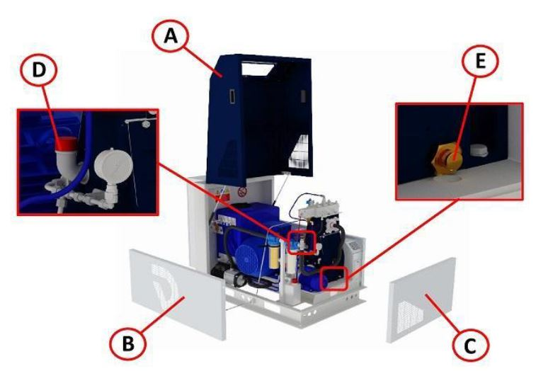
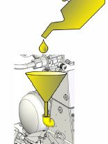
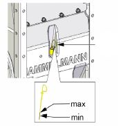

Before proceeding, carefully read the | |
Interval1 year or 4 years from the second time | Operation complexityMedium03 / 05 |
Authorized personnelMachine operator | Required PPE:  |
To access the drain valve plug and filler neck, open the cover hood (A) and remove the front (C) and side (B) guards.
A suitable collection container with a capacity greater than 5litri is required to collect the oil.
Place a cloth or similar material under the oil drain plug (E).

Remove plug (D) from the oil filler neck.
To drain the oil, use the flexible hose with the dedicated supplied screw fitting. Ensure that the open end remains inside the prepared collection container
Unscrew the oil drain valve plug (E). The oil starts to flow out as soon as the flexible hose screw connection is tightened.
Check the used oil for emulsion. If emulsion is present, remove the moisture from the oil circuit.
Remove the flexible hose and screw the oil drain valve plug (E) back in.
Fill the crankcase with approximately 4.3 litres of new oil, checking the level with the dipstick.
Oil viscosity grade: PAO ISO VG 320.
A comparison table is provided at the end of the document.
 |  |